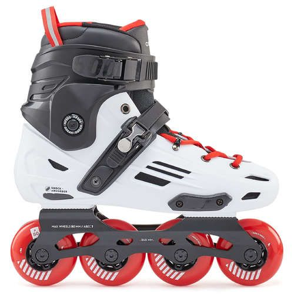
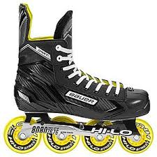
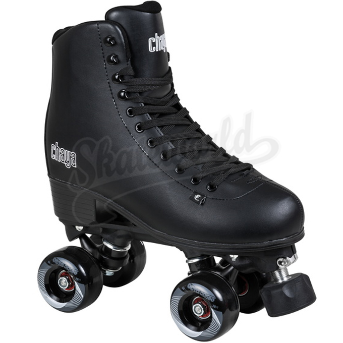

|
For beginner and intermediate or recreational runners, roller skating or rollerblading can improve your cardio fitness. And, if you’re prone to injury, this can be a great cross-training method to reduce impact on the shins, knees, and hips, says Thomson. And since both activities increase the time on the legs, doing so can help build the aerobic base. |
For beginner and intermediate or recreational runners, roller skating or rollerblading can improve your cardio fitness. And, if you’re prone to injury, this can be a great cross-training method to reduce impact on the shins, knees, and hips, says Thomson. And since both activities increase the time on the legs, doing so can help build the aerobic base. |
For beginner and intermediate or recreational runners, roller skating or rollerblading can improve your cardio fitness. And, if you’re prone to injury, this can be a great cross-training method to reduce impact on the shins, knees, and hips, says Thomson. And since both activities increase the time on the legs, doing so can help build the aerobic base. |
|  |  |  |